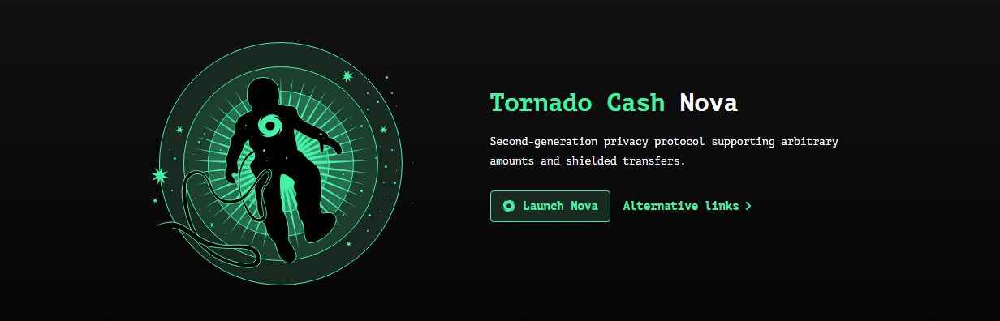

Tornado Cash is a non-custodial privacy protocol that uses zero-knowledge proofs to sever the public link between deposit and withdrawal addresses. The Tornado Cash Mixer supports fixed denominations for simplicity and to preserve a uniform anonymity set. This page provides educational guidance on design, risks, metrics, and safer patterns of use.
Tornado Cash : zk-SNARKs, Commitments & Nullifiers
At deposit, you create a secret and nullifier and commit their hash on-chain. Deposits form a Merkle tree; your proof later shows membership of that tree without revealing which leaf. The nullifier hash is revealed at withdrawal to prevent re-use, preserving privacy while enforcing soundness.
Why Fixed Denominations in Tornado Cash Mixer?
Fixed sizes reduce inference attacks that match unique deposit amounts to withdrawals. Multiple notes can be combined over time; timing and address hygiene remain crucial to retain unlinkability.
Tornado Cash Fees, Relayers & Operational Considerations
Fees include L1 gas (for deposits/withdrawals), optional relayer fees, and any proof/verification overhead embedded in transactions. Using a relayer can improve operational privacy by decoupling gas funding from the withdraw address.
Comparing Usage Patterns for Tornado Cash
| Pattern | Best For | Key Benefits | Considerations |
|---|---|---|---|
| Relayer-Assisted Withdraw | OpSec & Gas Privacy | Hides gas payer; strengthens unlinkability | Trust model: relayer sees withdraw address & fee; choose reputable providers. |
| Delayed Withdraw | Maximizing Anonymity Set | Larger set, more co-mixers | Requires patience; watch pool activity/volume. |
| Multi-Note Strategy | Large Value | Splits flow across denominations & time | Operationally complex; track notes securely. |
| Direct Withdraw | Simplicity | Fewer moving parts | Gas linkability if the same wallet funds gas. |
Security & Risk Notes for Tornado Cash
While Tornado Cash enhances on-chain privacy, it does not guarantee absolute anonymity. Deanonymization can occur via timing analysis, dusting, reuse of identifiers, or poor operational security. Adhere to strict address hygiene and avoid patterns that reduce your anonymity set.
Key Risks in Tornado Cash Mixer
- Timing Correlation: Depositing and withdrawing in a narrow window lowers privacy. Stagger events.
- Identifier Reuse: Reusing the same wallet across funding and destination allows heuristic linking.
- Malicious Relayers / Phishing: Use vetted relayers and official links only.
- Denomination Fingerprinting: Rare denominations can shrink the effective anonymity set.
KPI Metrics for Tornado Cash Privacy Health
| Metric | Healthy Range | Notes |
|---|---|---|
| Anonymity Set Size | Higher is better | Count recent deposits in the same denomination before withdrawing. |
| Time in Pool | Hours → Days | Longer dwell reduces timing correlation; balance against operational needs. |
| Relayer Fee | Competitive/transparent | Weigh privacy gain vs cost; avoid unknown providers. |
| Gas Footprint | Reasonable vs network load | Avoid spikes that make your tx stand out in mempool. |
Compliance, Legal & Responsible Use (Important)
This page is for educational purposes only. Do not use Tornado Cash or any mixer for illicit activity. Laws and regulations vary by jurisdiction and may change. Some regions have restrictions or sanctions related to specific smart contracts or interfaces. Always consult qualified legal counsel and follow applicable laws, exchange policies, and reporting requirements.
Tornado Cash Authoritative & Trustworthy Resources (General)
Review official documentation and credible research on zero-knowledge proofs and on-chain privacy. Replace the placeholders below with the appropriate authoritative links for your jurisdiction.
- Zero-Knowledge Proofs Primer (Educational) — Background on zk-SNARKs and privacy properties.
- Smart Contract Security Checklist — Approval hygiene, phishing prevention, key handling.
- Compliance Overview — High-level guidance on AML/KYC obligations and sanctions awareness.
Frequently Asked Questions — Tornado Cash
What problem does Tornado Cash solve?
Tornado Cash helps break public on-chain links between deposit and withdrawal addresses, improving transaction privacy without centralized custody.
How does Tornado Cash Mixer use zero-knowledge proofs?
The Tornado Cash Mixer lets you prove membership of a deposit set (Merkle tree) via zk-SNARKs without revealing which deposit was yours.
Why are denominations fixed in Tornado Cash Mixer?
Standardized amounts help preserve a large, uniform anonymity set and mitigate amount-matching attacks.
Does using a relayer increase privacy in Tornado Cash?
Relayers can prevent gas-funding linkability between wallets, but choose reputable providers and understand fee/operational trade-offs.
Is Tornado Cash legal to use?
It depends on your jurisdiction and evolving regulations. Some regions impose restrictions on specific contracts or interfaces. Obtain legal advice and follow all applicable laws.
What are best practices for stronger privacy with Tornado Cash?
- Wait for a larger anonymity set; avoid tight deposit/withdraw timing.
- Do not reuse funding or destination identities/wallets.
- Consider a relayer; verify links and avoid phishing.
Can on-chain analytics still link my activity?
Heuristics may correlate timing, amounts, or behavior. Good operational security reduces, but doesn’t eliminate, such risks.
What happens if I lose my note?
Your note proves deposit ownership. Without it, you cannot withdraw the funds from the pool. Store secrets securely and offline.